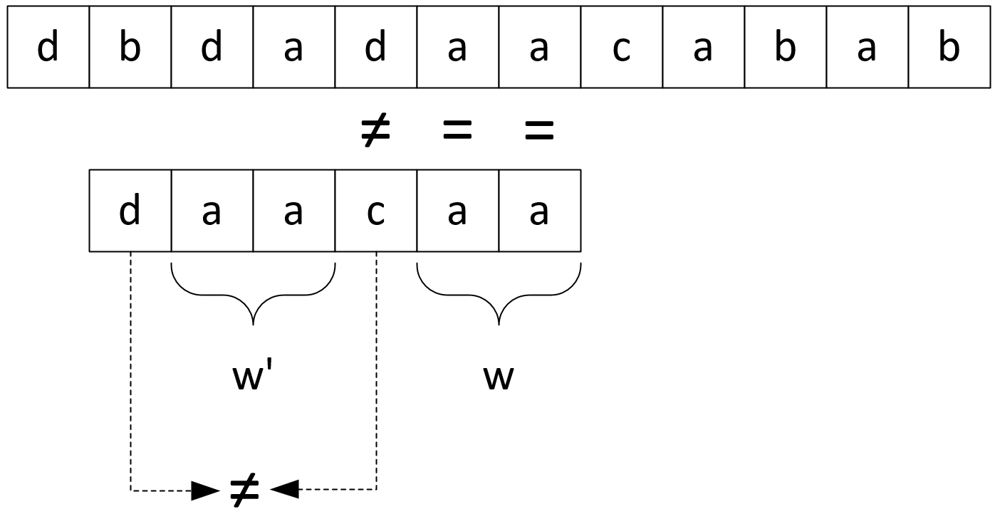

| $i=$ | $1$ | $2$ | $3$ | $4$ | $5$ | $6$ | $7$ | $8$ | $9$ | $10$ | $11$ | $12$ |
|---|---|---|---|---|---|---|---|---|---|---|---|---|
| $t=$ | $x$ | $p$ | $b$ | $c$ | $t$ | $t_6$ | $t_7$ | $t_8$ | $t_9$ | $t_{10}$ | $t_{11}$ | $t_{12}$ |
| $s=$ | $ $ | $ $ | $t$ | $p$ | $a$ | $s_4$ | $s_5$ | $s_6$ | $s_7$ | $ $ | $ $ | $ $ |
| $pos$ | $ $ | $ $ | $ $ | $ $ | $\uparrow$ | $ $ | $ $ | $ $ | $ $ | $ $ | $ $ | $ $ |
На сколько позиций можно сдвинуть подстроку?
На $2$ позиции
| $i=$ | $1$ | $2$ | $3$ | $4$ | $5$ | $6$ | $7$ | $8$ | $9$ | $10$ | $11$ | $12$ |
|---|---|---|---|---|---|---|---|---|---|---|---|---|
| $t=$ | $x$ | $p$ | $b$ | $c$ | $t$ | $t_6$ | $t_7$ | $t_8$ | $t_9$ | $t_{10}$ | $t_{11}$ | $t_{12}$ |
| $s=$ | $ $ | $ $ | $ $ | $ $ | $t$ | $p$ | $a$ | $s_4$ | $s_5$ | $s_6$ | $s_7$ | $ $ |
| $pos$ | $ $ | $ $ | $ $ | $ $ | $ $ | $ $ | $ $ | $ $ | $ $ | $ $ | $\uparrow$ | $ $ |
Далее представлен под построения таблицы $R$ для подстроки $s$
def build_r(s):
R = dict()
for i in range(len(s) - 1, -1, -1):
if s[i] not in R:
R[s[i]] = [i]
else:
R[s[i]].append(i)
return R
Например, для подстроки 'abacbabc' будет построена таблица {'c': [7, 3], 'b': [6, 4, 1], 'a': [5, 2, 0]}

def N2L_prime(N):
M = len(N)
L_prime = [0] * M
for j in range(M - 1):
if N[j] != 0:
i = M - N[j]
L_prime[i] = j
return L_prime
def z_func(s):
z = [0] * len(s)
left, right = 0, 0
for i in range(1, len(s)):
z[i] = max(0, min(z[i - left], right - i))
while i + z[i] < len(s) and s[z[i]] == s[i + z[i]]:
z[i] += 1
if i + z[i] > right:
left, right = i, i + z[i]
return z
for, очевидно, выполняется $O(M)$ разfor цикл while тоже сделает $O(M)$ итерацийwhile либо вообще не выполнится, либо обязательно увеличит значение $r$while выполняет $O(M)$ итераций, а значит, сложность всего алгоритма: $$O(M)$$
def Z2l_prime(Z):
l_prime = [0] * len(S)
longest = 0
for i, zv in enumerate(reversed(Z)):
longest = max(zv, longest) if zv == i + 1 else longest
l_prime[-i - 1] = longest
return l_prime
find класса str